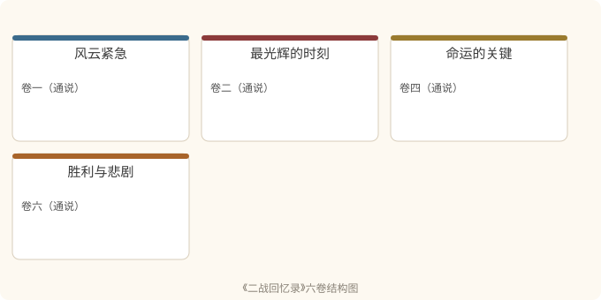

第二次世界大战回忆录
一、基本信息
| 作者 | 温斯顿·丘吉尔 |
|---|---|
| 成书/出版 | 1948—1954年六卷出版（通说待核；Britannica B314 正文未载——仅 Nobel Prize 1953 Quick Facts） Winston Churchill — Encyclopaedia Britannica（百科全书） |
| 国别/地区 | 英国 |
| 时代 | 现当代 · 20世纪 |
| 体裁 | 回忆录（六卷） |
| 语言 | 英语 |

《二战回忆录》六卷结构图（主题·结构图）
二、创作背景
作者页（B314）：丘吉尔诺贝尔奖 1953（Quick Facts——'Nobel Prize (1953)'）；演说（B314）：'He excelled in the set speech, on which he always spent enormous pains'。
六卷（1948—54说——通说待核）；1953年诺奖授奖词（'master of historical description'说——通说待核）。
三、内容脉络
六卷：风云紧急/最光辉的时刻/伟大的同盟/命运的关键/紧缩包围圈/胜利与悲剧（卷名通说待核）。
四、主要人物表
| 人物 | 身份 | 说明 |
|---|---|---|
| 丘吉尔 | 首相·作者 | （B314） |
五、主题与艺术特点
- 战时 memoir 与历史书写（通说待核）。
- '胜利不惜一切代价'的演说（通说待核）。
- 英语民族的历史叙事（通说待核）。
六、影响与评论
- Britannica：丘吉尔诺贝尔奖 1953（B314 Quick Facts）。
Winston Churchill — Encyclopaedia Britannica（百科全书） - 作者页：'He excelled in the set speech'（B314）。
Winston Churchill — Encyclopaedia Britannica（百科全书）
七、阅读建议
难点
- 六卷体量。
- 二战史全景。
- 《第二次世界大战回忆录》（商务印书馆/译林版本，通说待核）。
- 英文原版（Cassell/Houghton Mifflin）。
对照《第一次世界大战回忆录》（通说——丘吉尔 World Crisis）。
八、待核实
- 六卷卷名与年份核对。
- 1953诺奖授奖词（'master of historical description'说）核对。
- 'The Second World War'书名（六卷本各卷名）待核。
本页主要来源
温斯顿·丘吉尔的其他收录作品：第二次世界大战回忆录